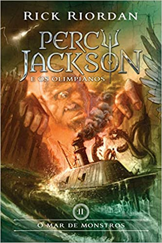
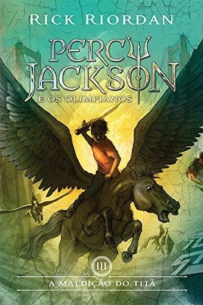
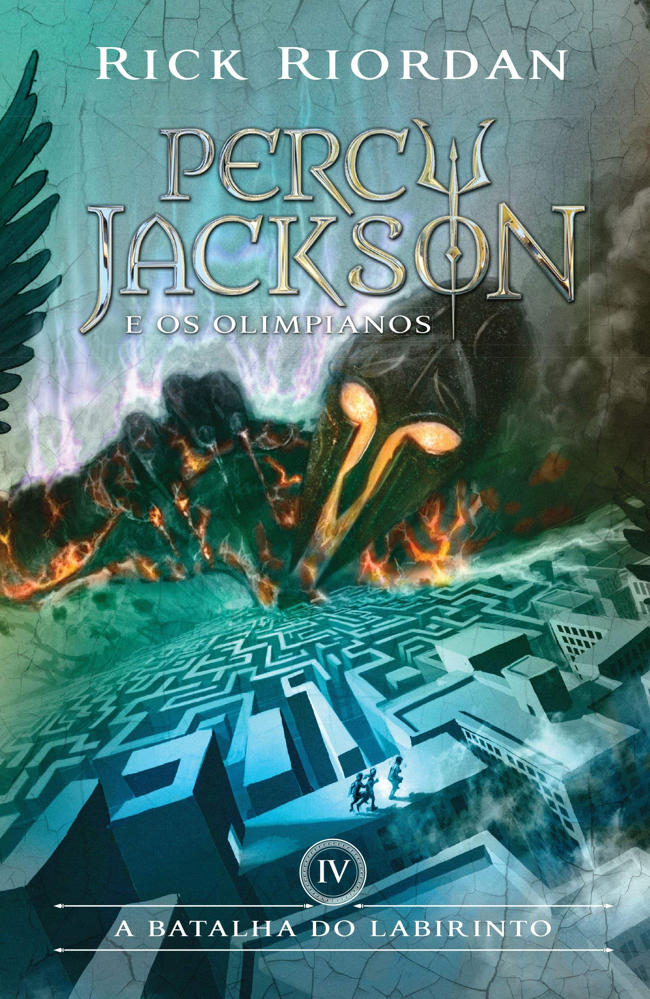
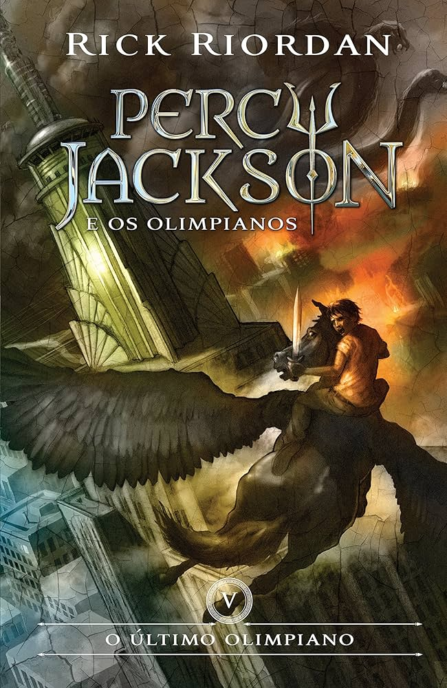
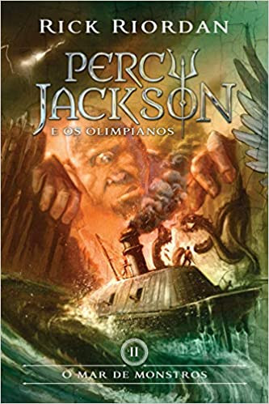
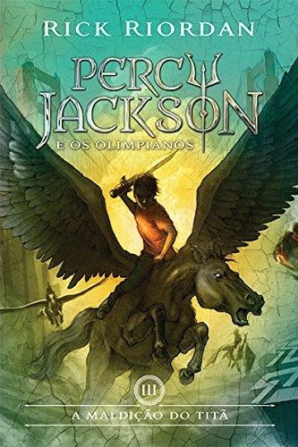
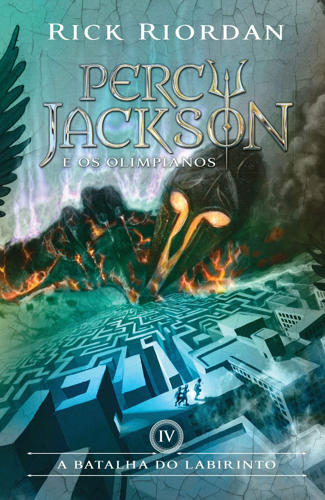
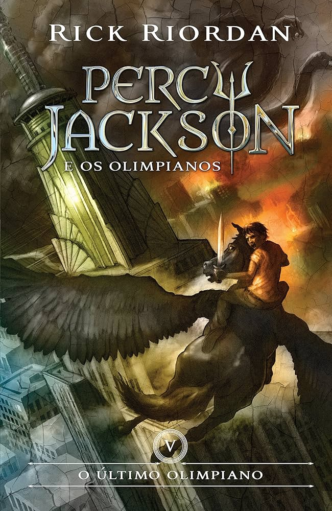

Livros
- O Ladrão de Raios.
- O Mar de Monstros.
- A Maldição do Titã.
- A Batalha do Labirinto.
- O Último Olimpiano.
Na Academia Percy, fez um amigo, Grover, o sátiro, que mais tarde o levaria para o Acampamento Meio-Sangue. Após chegar lá e ser ajudado a se recuperar por Annabeth Chase, filha de Atena, ele partiu com ela e Grover em uma missão, após ser acusado de roubar os símbolos de poder de Zeus, o Raio-Mestre, e o de Hades, o Elmo das Trevas.
Neste livro, o ano foi bom. Percy conheceu um novo amigo, Tyson. Mais tarde Percy descobre que Tyson era, na verdade, seu irmão. Porém, em seu último dia de aula foram atacados por lestrigões ou "canadenses". Tyson e Percy conseguiram vence-los com uma ajuda de Annabeth Chase, e foram para o Acampamento Meio-Sangue, já que Percy descobriu que Tyson era um ciclope. Eles procuravam o sátiro Grover, que ia atrás de Pã. E buscaram o Velocino de Ouro para curar a Árvore de Thalia Grace que havia sido envenenada por Luke Castellan.
Em A Maldição do Titã, Percy tem de lutar contra Atlas, que capturou Ártemis e Annabeth e as colocou para segurar o céu. Ele foi junto com as caçadoras Bianca di Angelo e Zoë Doce-Amarga, a semideusa filha de Zeus, Thalia Grace e o sátiro Grover. Por fim, conseguiram resgatar as duas e colocar Atlas de volta em seu lugar e Zoë Doce-Amarga morre pelo seu pai Atlas e a lâmina de Percy o impede de lutar, por causa da maldição de Ares que ele lhe disse em O Ladrão de Raios " cada vez que erguer sua lâmina em batalha, a cada vez que esperar sucesso sentirá a minha maldição. Cuidado Percy Jackson. Cuidado."
Em A Batalha do Labirinto, Percy reencontra Rachel Elizabeth Dare, a mortal que ele conheceu na Barragem de Hoover no livro anterior. Num jogo de caça-bandeira, Percy e Annabeth descobrem uma passagem para o Labirinto de Dédalo no meio do acampamento e isso preocupa Quíron, já que é uma passagem perfeita para uma invasão. Annabeth é designada para liderar uma missão pelo Labirinto, junto de Percy, Tyson e Grover. Eles entram no Labirinto para impedir que Luke Castellan consiga realizar a invasão. No meio do caminho, eles encontram Nico di Angelo, Hefesto, Pã, Ethan Nakamura e várias outras "coisas", durante a tragetória do livro acontece o primeiro beijo de Annabeth e Percy durante a batalha contra os telquines.
Percy e Luke mergulham no Rio Estige e são atingidos pela "Maldição de Aquiles". Percy Jackson e seus amigos lutam em uma guerra assemelhando-se a guerra inicial entre os deuses gregos e os Titãs em uma batalha final com o poderoso titã, Cronos. Essa guerra também relembra a uma das histórias de Homero, a guerra de Tróia (é um dos comentários de Prometeu na pagina 222 em O Último Olimpiano). Eles finalmente derrotam Cronos e o Olimpo é salvo. A Grande Profecia se aplica a Luke, e sua grande escolha foi passar do lado do mal para o do bem, sacrificando-se. Percy entrega a faca de Annabeth para Luke, que se mata atingido seu "calcanhar de Aquiles". A "lâmina maldita" da profecia era a faca que Luke deu para Annabeth. Os deuses privilegiam Percy, Grover, Thalia, Annabeth e Tyson com um desejo de cada. Tyson torna-se General do exército de Ciclopes, e a arma que eles concedem a pedido dele é um bastão. Grover recebe um lugar no Conselho de Anciãos de Casco Fendido e se torna o novo Senhor do Mundo Selvagem. Annabeth vira Arquiteta oficial do Olimpo e começa a reconstruí-lo. Thalia recebe várias outras caçadoras para juntarem-se ao grupo das Caçadoras de Ártemis. Vendo todos os danos causados, Percy faz os deuses jurarem pelo Rio Estige que eles iriam reconhecer todas as suas crianças quando fizerem 13 anos. Ele também pede para construir chalés para os deuses menores, como Hécate e Íris e um para os filhos de Hades. Rachel Elizabeth Dare se torna o novo Oráculo do Acampamento Meio-Sangue. Percy e Annabeth se tornam um casal e depois do seu segundo beijo (o primeiro foi no livro A Batalha do Labirinto), Clarisse La Rue e todos os seus outros amigos sobreviventes jogam eles no lago, onde eles compartilham um beijo debaixo d'água.
 






